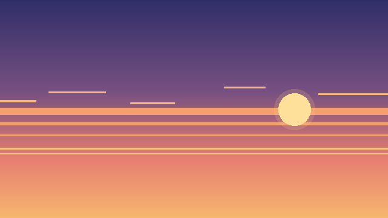
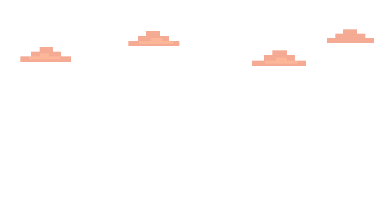
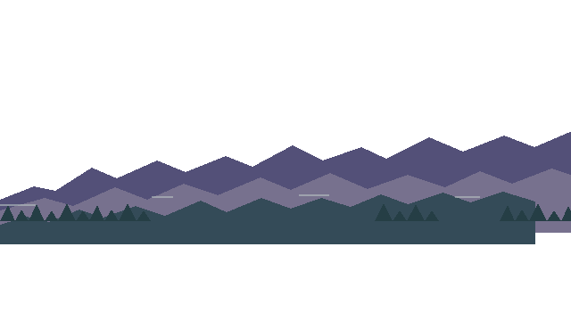
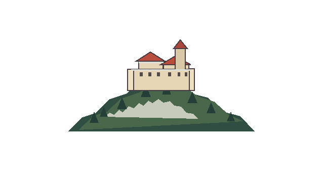
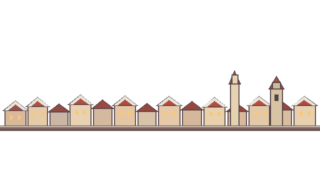
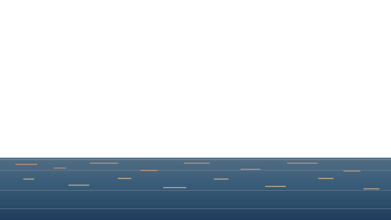
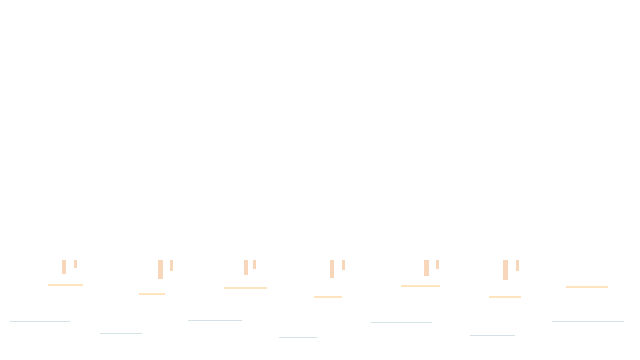
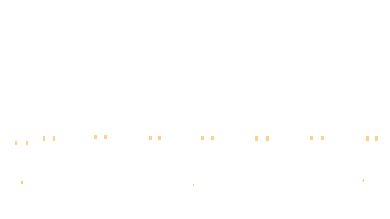
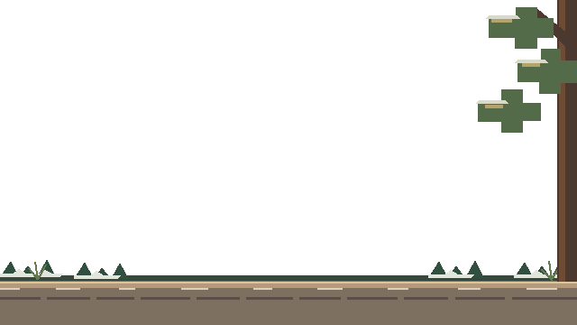

Za govor! · art benchmark 01
Ptuj — mesto ob Dravi
16-bit pixel art · 640 × 360
Prvi večplastni lokacijski background: pozni zimski mrak, Ptujski grad nad starim mestnim jedrom in Drava v ospredju. Premikaj kazalec nad prizorom za občutek globine; animacije so namenoma zelo umirjene.









1×
L5 · Nebo in oblakiOblaki se počasi premikajo; nebo ostane statično.
L4 · Oddaljeni gričiMinimalen parallax, brez alpskih vrhov.
L3 · Ptujski gradGrad je na svojem griču nad mestom.
L2 · Staro mestno jedroPrepoznavna strešna linija, mestni stolp in cerkveni zvonik.
L1 · DravaLočena plast vode in odsevov; odsevi se premikajo bolj kot obala.
L0 · Bližnji planRečni breg, pot in rastline; najmočnejši občutek globine.